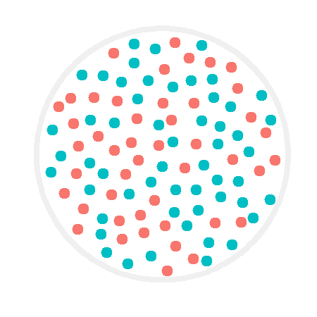

<!DOCTYPE html>
<html lang="en">
<head>
  <title>Experiment</title>

  <script src="https://unpkg.com/jspsych@7.3.0"></script>
  <script src="https://unpkg.com/@jspsych/plugin-html-keyboard-response@1.1.2"></script>
  <script src="https://unpkg.com/@jspsych/plugin-image-keyboard-response@1.1.2"></script>
  <script src="https://unpkg.com/@jspsych/plugin-preload@1.1.2"></script>
  <link href="https://unpkg.com/jspsych@7.3.0/css/jspsych.css" rel="stylesheet" type="text/css" />

  <script type="text/javascript" src="lib/jspsych-7-pavlovia-2022.1.1.js"></script>

</head>
  
<body></body>
<script>

/* -------------------------------------------------------------------------------------------------------------------------------- */
/* THINGS YOU CAN ADJUST */

var fix_cross_dur = [600, 800, 1000, 1200];
var mask_dur = 100;
var practice_display_dur = [100, 250, 500, 650, 1000];
var display_dur = [100, 250, 500, 650, 1000, 2000, 3000];
var how_long_to_respond = 2000;

/* -------------------------------------------------------------------------------------------------------------------------------- */
/* PRE-EXPERIMENT */

/* initialize jsPsych */
var jsPsych = initJsPsych();

/* create timeline */
var timeline = [];

/* init connection with pavlovia.org */
var pavlovia_init = {
	type: jsPsychPavlovia,
	command: "init" 
};

/* preload all media */
var images = [
  'img/blue1.png','img/blue2.png','img/blue3.png','img/blue4.png','img/blue5.png','img/blue6.png','img/blue7.png',
  'img/blue8.png','img/blue9.png','img/blue10.png','img/blue11.png','img/blue12.png','img/blue13.png','img/blue14.png','img/blue15.png',
  'img/blue16.png','img/blue17.png','img/blue18.png','img/blue19.png','img/blue20.png','img/blue21.png','img/blue22.png','img/blue23.png',
  'img/blue24.png','img/blue25.png','img/blue26.png','img/blue27.png','img/blue28.png','img/blue29.png','img/blue30.png','img/blue31.png',
  'img/blue32.png','img/blue33.png','img/blue34.png','img/blue35.png','img/blue36.png','img/blue37.png','img/blue38.png','img/blue39.png',
  'img/blue40.png',
  'img/red1.png','img/red2.png','img/red3.png','img/red4.png','img/red5.png','img/red6.png',
  'img/red7.png','img/red8.png','img/red9.png','img/red10.png','img/red11.png','img/red12.png','img/red13.png','img/red14.png','img/red15.png',
  'img/red16.png','img/red17.png','img/red18.png','img/red19.png','img/red20.png','img/red21.png','img/red22.png','img/red23.png',
  'img/red24.png','img/red25.png','img/red26.png','img/red27.png','img/red28.png','img/red29.png','img/red30.png','img/red31.png',
  'img/red32.png','img/red33.png','img/red34.png','img/red35.png','img/red36.png','img/red37.png','img/red38.png','img/red39.png',
  'img/red40.png','img/red41.png','img/red42.png','img/red43.png','img/red44.png','img/red45.png','img/red46.png','img/red47.png',
  'img/red48.png','img/red49.png','img/red50.png','img/red51.png','img/red52.png','img/red53.png','img/red54.png','img/red55.png',
  'img/red56.png','img/red57.png','img/red58.png','img/red59.png','img/red60.png',
  'img/sanityblue1.png','img/sanityblue2.png','img/sanityblue3.png','img/sanityblue4.png',
  'img/sanityred1.png','img/sanityred2.png','img/sanityred3.png','img/sanityred4.png','img/sanityred5.png','img/sanityred6.png',
  'img/response_scr.png', 'img/mask.png'
];
var preload = {
  type: jsPsychPreload,
  images: images
};

/* -------------------------------------------------------------------------------------------------------------------------------- */
/* INSTRUCTIONS */

/* Trial: Welcome message */
var welcome = {
  type: jsPsychHtmlKeyboardResponse,
  stimulus: "Welcome to the experiment. Press space to begin.",
  choices: [' '],
  data: {
    task: 'instruction'
  }
};

/* Trial: Instructions */
var instructions = {
	type: jsPsychHtmlKeyboardResponse,
	stimulus: `
		<p>In this experiment, a large circle will appear in the center 
    of the screen. Inside that circle are 100 red and blue dots.</p>
      <div style='float: center;'></img>
    <p>You will have a short period of time (100 ms to 3 secs) to check if there are more red or blue dots. On each trial, red is 60% likely to be the correct answer.</p>
    <p>After this quick observation period, you will be prompted to respond by a screen with a blue dot on the left and a red dot on the right.</p>
      <div style='float: center;'></img>
    <p>If there were more blue than red dots, press <strong>f</strong>.</p>
    <p>If there were more red than blue dots, press <strong>j</strong>.</p>
    <p>Press enter to start practicing.</p>
	`,
  choices: ['Enter'],
	post_trial_gap: 1500,
  data: {
    task: 'instruction'
  }
};

/* -------------------------------------------------------------------------------------------------------------------------------- */
/* PRACTICE */

/* PRACTICE: Fixation cross */
var practice_fixation = {
  type: jsPsychHtmlKeyboardResponse,
  stimulus: '<div style="font-size:160px;">+</div>',
  choices: "NO_KEYS",
  trial_duration: function(){
    return jsPsych.randomization.sampleWithoutReplacement(fix_cross_dur, 1)[0];
  },
  data: {
    task: 'practice'
  }
};

/* PRACTICE Timeline variable: Stimuli */
var practice_stimuli = [
  {stimulus: "img/blue1.png",       correct_response: 'f'},  
  {stimulus: "img/sanityblue1.png", correct_response: 'f'},
  {stimulus: "img/sanityblue2.png", correct_response: 'f'},
  {stimulus: "img/sanityblue3.png", correct_response: 'f'},
  {stimulus: "img/red1.png",       correct_response: 'j'},
  {stimulus: "img/sanityred1.png", correct_response: 'j'},
  {stimulus: "img/sanityred2.png", correct_response: 'j'},
  {stimulus: "img/sanityred3.png", correct_response: 'j'},
  {stimulus: "img/sanityred4.png", correct_response: 'j'},
  {stimulus: "img/sanityred5.png", correct_response: 'j'}
];

/* PRACTICE Trial: Stimulus display */
var practice_display = {
  type: jsPsychImageKeyboardResponse,
  stimulus: jsPsych.timelineVariable('stimulus'),
  trial_duration: function(){
    return jsPsych.randomization.sampleWithoutReplacement(practice_display_dur, 1)[0];
  },
  choices: "NO_KEYS",
  data: {
    task: 'practice'
  }
};

/* PRACTICE Trial: Visual mask */
var practice_mask = {
  type: jsPsychImageKeyboardResponse,
  stimulus: 'img/mask.png',
  trial_duration: mask_dur,
  choices: "NO_KEYS",
  data: {
    task: 'practice'
  }
};

/* PRACTICE Trial: Response */
var practice_response = {
	type: jsPsychHtmlKeyboardResponse,
	stimulus: `
    <div style='float: center;'></img>
	`,
  choices: ['f','j'],
	trial_duration: how_long_to_respond,
  data: {
    task: 'practice_response',
    correct_response: jsPsych.timelineVariable('correct_response')
  },
  on_finish: function(data) {
    data.correct = jsPsych.pluginAPI.compareKeys(data.response, data.correct_response);
  }
};   

/* Trial: too slow */
var slow_msg = {
  type: jsPsychHtmlKeyboardResponse,
  stimulus: "Response too slow. Please respond quicker next time!",
  trial_duration: 2000,
  data: {
    task: 'warning'
  }
};

/* Trial show "too slow" warning. Don't repeat the trial though (just skip it), otherwise subjects can use this to perform better. */
var slow_msg_conditional = {
  timeline: [slow_msg],
  conditional_function: function(){
    var data = jsPsych.data.get().last(1).values()[0];
    if (jsPsych.pluginAPI.compareKeys(data.response, 'f') | jsPsych.pluginAPI.compareKeys(data.response, 'j')){
      return false;
    } else {
      return true;
    }
  }
};

/* PRACTICE block */
var practice_block = {
  timeline: [practice_fixation, practice_display, practice_mask, practice_response, slow_msg_conditional],
  timeline_variables: practice_stimuli,
  randomize_order: true,
  repetitions: 1
};

/* PRACTICE screen if the subject fails the practice block */
var practice_fail_msg = {
  type: jsPsychHtmlKeyboardResponse,
  stimulus: "You missed more than 2 practice trials. Let's try that again. Press space to repeat.",
  choices: [' '],
  data: {
    task: 'practice'
  }
};

/* PRACTICE repeat if accuracy below 80% on the last 10 practice trials */
var practice_fail_msg_conditional = {
  timeline: [practice_fail_msg],
  conditional_function: function(){
    var practice_trials = jsPsych.data.get().filter({task: 'practice_response'}).last(10);
    var correct_practice_trials = practice_trials.filter({correct: true});
    var accuracy = Math.round(correct_practice_trials.count() / practice_trials.count() * 100);
    if (accuracy < 80){
      repeat_practice = true;
      return true;
    } else {
      repeat_practice = false;
      return false;
    }
  }
};

/* PRACTICE loop */
var practice_loop = {
  timeline: [practice_block, practice_fail_msg_conditional],
  loop_function: function() {
    if (repeat_practice == true) {
      return true;
    } else {
      return false;
    }
  }
};


/* -------------------------------------------------------------------------------------------------------------------------------- */
/* TRIAL & BLOCK */

/* Trial: Fixation cross */
var fixation = {
  type: jsPsychHtmlKeyboardResponse,
  stimulus: '<div style="font-size:160px;">+</div>',
  choices: "NO_KEYS",
  trial_duration: function(){
    return jsPsych.randomization.sampleWithoutReplacement(fix_cross_dur, 1)[0];
  },
  data: {
    task: 'fixation'
  }
};

/* Timeline variable: Stimuli */
var hard_stimuli = [
  {stimulus: "img/blue1.png",  correct_response: 'f', difficulty: 'hard'},
  {stimulus: "img/blue2.png",  correct_response: 'f', difficulty: 'hard'},
  {stimulus: "img/blue3.png",  correct_response: 'f', difficulty: 'hard'},
  {stimulus: "img/blue4.png",  correct_response: 'f', difficulty: 'hard'},
  {stimulus: "img/blue5.png",  correct_response: 'f', difficulty: 'hard'},
  {stimulus: "img/blue6.png",  correct_response: 'f', difficulty: 'hard'},
  {stimulus: "img/blue7.png",  correct_response: 'f', difficulty: 'hard'},
  {stimulus: "img/blue8.png",  correct_response: 'f', difficulty: 'hard'},
  {stimulus: "img/blue9.png",  correct_response: 'f', difficulty: 'hard'},
  {stimulus: "img/blue10.png", correct_response: 'f', difficulty: 'hard'},
  {stimulus: "img/blue11.png", correct_response: 'f', difficulty: 'hard'},
  {stimulus: "img/blue12.png", correct_response: 'f', difficulty: 'hard'},
  {stimulus: "img/blue13.png", correct_response: 'f', difficulty: 'hard'},
  {stimulus: "img/blue14.png", correct_response: 'f', difficulty: 'hard'},
  {stimulus: "img/blue15.png", correct_response: 'f', difficulty: 'hard'},
  {stimulus: "img/blue16.png", correct_response: 'f', difficulty: 'hard'},
  {stimulus: "img/blue17.png", correct_response: 'f', difficulty: 'hard'},
  {stimulus: "img/blue18.png", correct_response: 'f', difficulty: 'hard'},
  {stimulus: "img/blue19.png", correct_response: 'f', difficulty: 'hard'},
  {stimulus: "img/blue20.png", correct_response: 'f', difficulty: 'hard'},
  {stimulus: "img/blue21.png", correct_response: 'f', difficulty: 'hard'},
  {stimulus: "img/blue22.png", correct_response: 'f', difficulty: 'hard'},
  {stimulus: "img/blue23.png", correct_response: 'f', difficulty: 'hard'},
  {stimulus: "img/blue24.png", correct_response: 'f', difficulty: 'hard'},
  {stimulus: "img/blue25.png", correct_response: 'f', difficulty: 'hard'},
  {stimulus: "img/blue26.png", correct_response: 'f', difficulty: 'hard'},
  {stimulus: "img/blue27.png", correct_response: 'f', difficulty: 'hard'},
  {stimulus: "img/blue28.png", correct_response: 'f', difficulty: 'hard'},
  {stimulus: "img/blue29.png", correct_response: 'f', difficulty: 'hard'},
  {stimulus: "img/blue30.png", correct_response: 'f', difficulty: 'hard'},
  {stimulus: "img/blue31.png", correct_response: 'f', difficulty: 'hard'},
  {stimulus: "img/blue32.png", correct_response: 'f', difficulty: 'hard'},
  {stimulus: "img/blue33.png", correct_response: 'f', difficulty: 'hard'},
  {stimulus: "img/blue34.png", correct_response: 'f', difficulty: 'hard'},
  {stimulus: "img/blue35.png", correct_response: 'f', difficulty: 'hard'},
  {stimulus: "img/blue36.png", correct_response: 'f', difficulty: 'hard'},
  {stimulus: "img/blue37.png", correct_response: 'f', difficulty: 'hard'},
  {stimulus: "img/blue38.png", correct_response: 'f', difficulty: 'hard'},
  {stimulus: "img/blue39.png", correct_response: 'f', difficulty: 'hard'},
  {stimulus: "img/blue40.png", correct_response: 'f', difficulty: 'hard'},
  {stimulus: "img/red1.png",  correct_response: 'j', difficulty: 'hard'},
  {stimulus: "img/red2.png",  correct_response: 'j', difficulty: 'hard'},
  {stimulus: "img/red3.png",  correct_response: 'j', difficulty: 'hard'},
  {stimulus: "img/red4.png",  correct_response: 'j', difficulty: 'hard'},
  {stimulus: "img/red5.png",  correct_response: 'j', difficulty: 'hard'},
  {stimulus: "img/red6.png",  correct_response: 'j', difficulty: 'hard'},
  {stimulus: "img/red7.png",  correct_response: 'j', difficulty: 'hard'},
  {stimulus: "img/red8.png",  correct_response: 'j', difficulty: 'hard'},
  {stimulus: "img/red9.png",  correct_response: 'j', difficulty: 'hard'},
  {stimulus: "img/red10.png", correct_response: 'j', difficulty: 'hard'},
  {stimulus: "img/red11.png", correct_response: 'j', difficulty: 'hard'},
  {stimulus: "img/red12.png", correct_response: 'j', difficulty: 'hard'},
  {stimulus: "img/red13.png", correct_response: 'j', difficulty: 'hard'},
  {stimulus: "img/red14.png", correct_response: 'j', difficulty: 'hard'},
  {stimulus: "img/red15.png", correct_response: 'j', difficulty: 'hard'},
  {stimulus: "img/red16.png", correct_response: 'j', difficulty: 'hard'},
  {stimulus: "img/red17.png", correct_response: 'j', difficulty: 'hard'},
  {stimulus: "img/red18.png", correct_response: 'j', difficulty: 'hard'},
  {stimulus: "img/red19.png", correct_response: 'j', difficulty: 'hard'},
  {stimulus: "img/red20.png", correct_response: 'j', difficulty: 'hard'},
  {stimulus: "img/red21.png", correct_response: 'j', difficulty: 'hard'},
  {stimulus: "img/red22.png", correct_response: 'j', difficulty: 'hard'},
  {stimulus: "img/red23.png", correct_response: 'j', difficulty: 'hard'},
  {stimulus: "img/red24.png", correct_response: 'j', difficulty: 'hard'},
  {stimulus: "img/red25.png", correct_response: 'j', difficulty: 'hard'},
  {stimulus: "img/red26.png", correct_response: 'j', difficulty: 'hard'},
  {stimulus: "img/red27.png", correct_response: 'j', difficulty: 'hard'},
  {stimulus: "img/red28.png", correct_response: 'j', difficulty: 'hard'},
  {stimulus: "img/red29.png", correct_response: 'j', difficulty: 'hard'},
  {stimulus: "img/red30.png", correct_response: 'j', difficulty: 'hard'},
  {stimulus: "img/red31.png", correct_response: 'j', difficulty: 'hard'},
  {stimulus: "img/red32.png", correct_response: 'j', difficulty: 'hard'},
  {stimulus: "img/red33.png", correct_response: 'j', difficulty: 'hard'},
  {stimulus: "img/red34.png", correct_response: 'j', difficulty: 'hard'},
  {stimulus: "img/red35.png", correct_response: 'j', difficulty: 'hard'},
  {stimulus: "img/red36.png", correct_response: 'j', difficulty: 'hard'},
  {stimulus: "img/red37.png", correct_response: 'j', difficulty: 'hard'},
  {stimulus: "img/red38.png", correct_response: 'j', difficulty: 'hard'},
  {stimulus: "img/red39.png", correct_response: 'j', difficulty: 'hard'},
  {stimulus: "img/red40.png", correct_response: 'j', difficulty: 'hard'},
  {stimulus: "img/red41.png", correct_response: 'j', difficulty: 'hard'},
  {stimulus: "img/red42.png", correct_response: 'j', difficulty: 'hard'},
  {stimulus: "img/red43.png", correct_response: 'j', difficulty: 'hard'},
  {stimulus: "img/red44.png", correct_response: 'j', difficulty: 'hard'},
  {stimulus: "img/red45.png", correct_response: 'j', difficulty: 'hard'},
  {stimulus: "img/red46.png", correct_response: 'j', difficulty: 'hard'},
  {stimulus: "img/red47.png", correct_response: 'j', difficulty: 'hard'},
  {stimulus: "img/red48.png", correct_response: 'j', difficulty: 'hard'},
  {stimulus: "img/red49.png", correct_response: 'j', difficulty: 'hard'},
  {stimulus: "img/red50.png", correct_response: 'j', difficulty: 'hard'},
  {stimulus: "img/red51.png", correct_response: 'j', difficulty: 'hard'},
  {stimulus: "img/red52.png", correct_response: 'j', difficulty: 'hard'},
  {stimulus: "img/red53.png", correct_response: 'j', difficulty: 'hard'},
  {stimulus: "img/red54.png", correct_response: 'j', difficulty: 'hard'},
  {stimulus: "img/red55.png", correct_response: 'j', difficulty: 'hard'},
  {stimulus: "img/red56.png", correct_response: 'j', difficulty: 'hard'},
  {stimulus: "img/red57.png", correct_response: 'j', difficulty: 'hard'},
  {stimulus: "img/red58.png", correct_response: 'j', difficulty: 'hard'},
  {stimulus: "img/red59.png", correct_response: 'j', difficulty: 'hard'},
  {stimulus: "img/red60.png", correct_response: 'j', difficulty: 'hard'}
];

var easy_stimuli = [
  {stimulus: "img/sanityblue1.png", correct_response: 'f', difficulty: 'easy'},
  {stimulus: "img/sanityblue2.png", correct_response: 'f', difficulty: 'easy'},
  {stimulus: "img/sanityblue3.png", correct_response: 'f', difficulty: 'easy'},
  {stimulus: "img/sanityblue4.png", correct_response: 'f', difficulty: 'easy'},
  {stimulus: "img/sanityblue5.png", correct_response: 'f', difficulty: 'easy'},
  {stimulus: "img/sanityblue6.png", correct_response: 'f', difficulty: 'easy'},
  {stimulus: "img/sanityblue7.png", correct_response: 'f', difficulty: 'easy'},
  {stimulus: "img/sanityblue8.png", correct_response: 'f', difficulty: 'easy'},
  {stimulus: "img/sanityred1.png",  correct_response: 'j', difficulty: 'easy'},
  {stimulus: "img/sanityred2.png",  correct_response: 'j', difficulty: 'easy'},
  {stimulus: "img/sanityred3.png",  correct_response: 'j', difficulty: 'easy'},
  {stimulus: "img/sanityred4.png",  correct_response: 'j', difficulty: 'easy'},
  {stimulus: "img/sanityred5.png",  correct_response: 'j', difficulty: 'easy'},
  {stimulus: "img/sanityred6.png",  correct_response: 'j', difficulty: 'easy'},
  {stimulus: "img/sanityred7.png",  correct_response: 'j', difficulty: 'easy'},
  {stimulus: "img/sanityred8.png",  correct_response: 'j', difficulty: 'easy'},
  {stimulus: "img/sanityred9.png",  correct_response: 'j', difficulty: 'easy'},
  {stimulus: "img/sanityred10.png", correct_response: 'j', difficulty: 'easy'},
  {stimulus: "img/sanityred11.png", correct_response: 'j', difficulty: 'easy'},
  {stimulus: "img/sanityred12.png", correct_response: 'j', difficulty: 'easy'}
];

/* Trial: Stimulus display */
var display = {
  type: jsPsychImageKeyboardResponse,
  stimulus: jsPsych.timelineVariable('stimulus'),
  trial_duration: function(){
    display_duration = jsPsych.randomization.sampleWithoutReplacement(display_dur, 1)[0];
    return display_duration;
  },
  choices: "NO_KEYS",
  data: {
    task: 'display'
  },
  save_trial_parameters: {
    trial_duration: true
  }
};

/* Trial: Visual mask */
var mask = {
  type: jsPsychImageKeyboardResponse,
  stimulus: 'img/mask.png',
  trial_duration: mask_dur,
  choices: "NO_KEYS",
  data: {
    task: ' mask'
  }
};

/* Trial: Response */
var response = {
  type: jsPsychHtmlKeyboardResponse,
  stimulus: `
    <div style='float: center;'></img>
	`,
  trial_duration: how_long_to_respond,
  choices: ['f','j'],
  data: {
    task: 'response',
    correct_response: jsPsych.timelineVariable('correct_response'),
    difficulty: jsPsych.timelineVariable('difficulty')
  },
  on_finish: function(data) {
    data.correct = jsPsych.pluginAPI.compareKeys(data.response, data.correct_response);
    data.display_dur = display_duration;
  }
};

/* Select a random subset of the timeline variables. 
In total, there should be a ratio of 60 reds to 40 blues. This means when you randomly sample a list
of timeline variables, theres a 60% likelihood that any given trial favors red. 
Include 5 sanity checks too. */
function getRandomSubarray(arr, size) {
    var shuffled = arr.slice(0), i = arr.length, min = i - size, temp, index;
    while (i-- > min) {
        index = Math.floor((i + 1) * Math.random());
        temp = shuffled[index];
        shuffled[index] = shuffled[i];
        shuffled[i] = temp;
    }
    return shuffled.slice(min);
};
var hard_trials = getRandomSubarray(hard_stimuli, 90);
var easy_trials = getRandomSubarray(easy_stimuli, 10);
var all_trials = hard_trials.concat(easy_trials);

/* Link fixation cross, display, and response into one trial, then repeat to make one block. */
var one_block = {
  timeline: [fixation, display, mask, response, slow_msg_conditional],
  timeline_variables: all_trials,
  repetitions: 1,
  randomize_order: true
};

/* -------------------------------------------------------------------------------------------------------------------------------- */
/* EXPERIMENT */

/* Run blocks with breaks */
var experiment_beginning_screen = {
  type: jsPsychHtmlKeyboardResponse,
  stimulus: `
    <p>Great job, you scored 80% or higher! That's the end of practice. It's going to get a bit harder from here.</p>
    <p>Press b to begin the real experiment.</p>
  `,
  choices: ['b'],
  data: {
    task: 'instruction'
  }
};
var block_break = {
  type: jsPsychHtmlKeyboardResponse,
  stimulus: "<p>End of block. Feel free to take a break.</p><p>Press c when you're ready to continue with the experiment.</p>",
  choices: ['c'],
  data: {
    task: 'instruction'
  }
};

/* finish connection with pavlovia.org */
var pavlovia_finish = {
	type: jsPsychPavlovia,
	command: "finish"
	}; 

timeline.push(pavlovia_init);
timeline.push(preload);

timeline.push(welcome);
timeline.push(instructions);

timeline.push(practice_loop);
timeline.push(experiment_beginning_screen);

timeline.push(one_block);
timeline.push(block_break);

timeline.push(one_block);
timeline.push(block_break);

timeline.push(one_block);
timeline.push(block_break);

timeline.push(one_block);

timeline.push(pavlovia_finish);

/* -------------------------------------------------------------------------------------------------------------------------------- */
/* FEEDBACK */

/* feedback at the end of the experiment */
debrief_block = {
  type: jsPsychHtmlKeyboardResponse,
  stimulus: function() {

    var trials = jsPsych.data.get().filter({task: 'response'});
    var correct_trials = trials.filter({correct: true});
    var accuracy = Math.round(correct_trials.count() / trials.count() * 100);
    var rt = Math.round(trials.select('rt').mean());

    return `
      <p>End of experiment.</p>
      <p>You responded correctly on ${accuracy}% of the trials.</p>
      <p>Your average response time was ${rt} ms.</p>
      <p>Press c to complete the experiment. Thank you!</p>
    `
  },
  choices: ['c']
};
timeline.push(debrief_block);

/* -------------------------------------------------------------------------------------------------------------------------------- */
/* RUN */

/* start the experiment */
jsPsych.run(timeline);

</script>
</html>